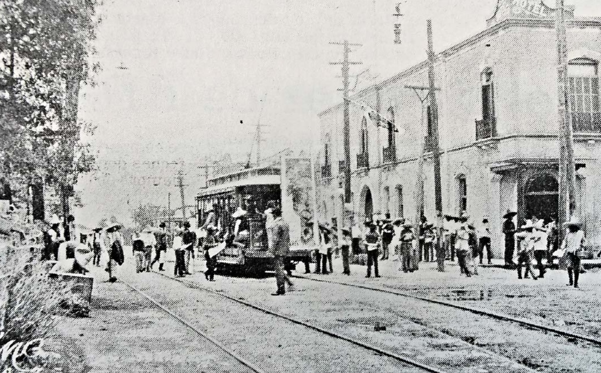
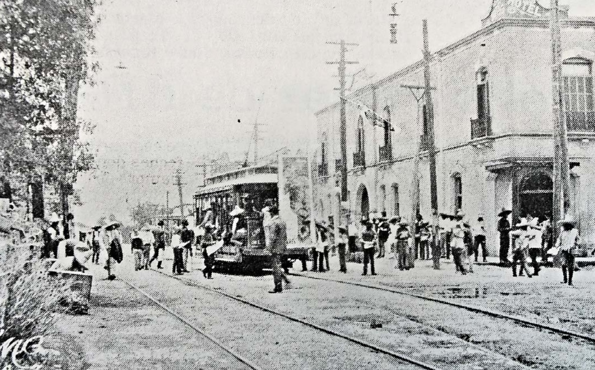

Breve historia
La ciudad tiene su origen más remoto hacia 1850, en el antiguo rancho “del Torreón”, nombre otorgado por una torre de vigilancia levantada en un extremo de la edificación. Esta propiedad pertenecía a don Leonardo Zuloaga, dueño de gran parte de las tierras de la comarca. Con el tiempo, el lugar se convirtió en una fructífera hacienda hasta la muerte de su fundador en 1865. La hacienda fue comprada y las demás tierras divididas. Mientras tanto, la producción de algodón siguió en aumento y la llegada del tren contribuyó al despunte económico de la región pues rompió el aislamiento de la comarca. De ser un territorio casi deshabitado, se convirtió en una población con los más altos índices de crecimiento de la nación. Su nombramiento como ciudad ocurrió el 15 de septiembre de 1907 y para entonces ya contaba con tranvía eléctrico. También desde los primeros años de su fundación, Torreón contaba ya con importantes industrias, relacionadas de uno u otro modo con el cultivo del algodón, tal es el caso de "La Esperanza", fábrica de aceites y jabones, la jabonera "La Unión", las fábricas textiles "La Constancia", "La Fe" y "La Alianza", así como la fundición metalúrgica Peñoles.
 
